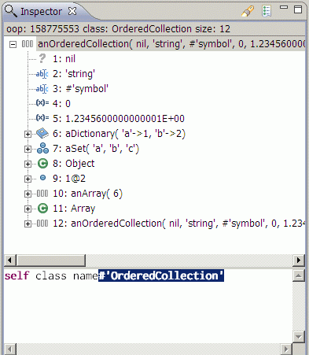

Using Inspector
Smalltalk inspector is implemented as separate view and there is multiple ways how to open it:
- from main menu Window >
Show View > Other... and open Inspector view.
- CTRL+3 and type in Inspector
- From smalltalk method editor context menu - menu item Inspect It
- From workspace editor in connected project - menu item Inspect It

Inspected objects are organized in tree, so you can follow different relations.
At the bottom of Inspector there is evaluation panel, which can be used
for sending messages to inspected objects (self, super works according
to object selected in tree).
It is possible to choose inspected object with using Find Object with Oop action, or list recently inspected objects.